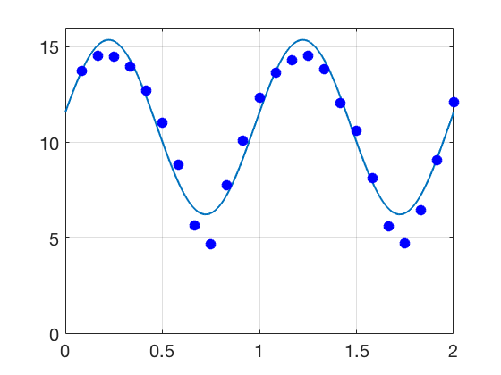
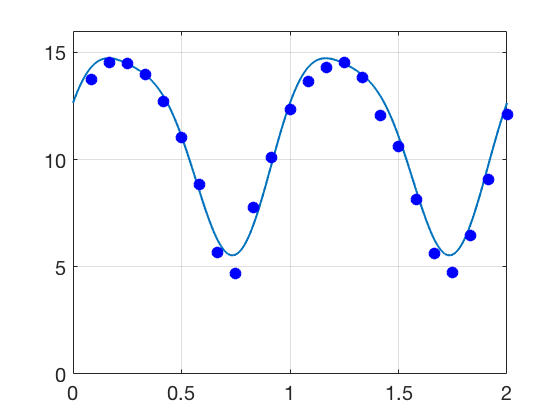

Additional Examples 4.2
1 Fit the data points \( (-1, 4), (0,2), (2,1), (3, 0.5) \) with an exponential model, using data linearization. Calculate the RMSE of the fit.

The model is \(y = c_1e^{c_2t}\). The linearized model is \(k_1+c_2 t = \ln y \), where \( k_1 = \ln c_1 \).
Each data point yields an equation:
\begin{eqnarray*}
k_1+(-1)c_2&=& 2\ln 2\\
k_1+(0)c_2&=& \ln 2\\
k_1+(2)c_2&=& 0\\
k_1+(3)c_2&=& -\ln 2
\end{eqnarray*}
The matrix form is
\[ A=\left[\begin{array}{cc}
1&-1\\
1&0\\
1&2\\
1&3
\end{array}\right]
\left[\begin{array}{r}
k_1\\c_2
\end{array}\right]=
\left[\begin{array}{r}
2\ln 2\\ \ln 2 \\ 0 \\-\ln 2
\end{array}\right].
\]
The normal equations are \(A^TAc = A^Tb\), or
\[\left[\begin{array}{cc}
4&4\\4&14
\end{array}\right]
\left[\begin{array}{r}
k_1\\c_2
\end{array}\right] =
\left[\begin{array}{r}
2\ln 2 \\ -5\ln 2
\end{array}\right].
\]
Solving in augmented form:
\[
\left[\begin{array}{rrrcr}
4&4&|&2\ln 2\\
4&14&|&-5\ln 2
\end{array}\right] \longrightarrow
\left[\begin{array}{rrrcr}
4&4&|&2\ln 2\\
0&10&|&-7\ln 2
\end{array}\right].
\]
Backsubstitution yields
\begin{eqnarray*}
c_2&=&-0.7\ln 2\\
k_1&=& 1.2 \ln 2
\end{eqnarray*}
Therefore, \( c_1 = 2^{1.2} \), and the
best exponential fit is \(y = f(t) = 2^{1.2}e^{-0.7(\ln 2) t} = 2^{1.2-0.7t}.\)
The values of \( f(t) \) for the four \( t \) inputs are approximately \(
\left[\begin{array}{r}
3.732\\2.297\\0.871\\0.536
\end{array}\right], \) resulting in errors \(
\left[\begin{array}{r}
-0.268\\0.297\\-0.129\\0.036
\end{array}\right] \)
and RMSE \( = 0.211 \).
2 The National Snow and Ice Data Center estimates of the ice extent at the North Pole (in \(10^6\) km\(^2\) ), during the years of 2015-6, are shown in the table in the text.
Write Python code to fit the model \(y = c_1+c_2t+c_3\sin 2\pi t+c_4\cos 2\pi t \) to the data, where \(y\) denotes the ice extent and \(t\) is time in years beginning Jan. 2015. Calculate the RMSE. What does \( c_2\) denote? Add a further term \( c_5 \cos 4\pi t\) to the model, and discuss changes in RMSE and \( c_2\).
For the model \(y = c_1+c_2t+c_3\sin 2\pi t+c_4\cos 2\pi t \), the data matrix has form
\( A=\left[\begin{array}{cccc}
1& t_1& \sin 2\pi t_1 & \cos 2\pi t_1\\
1& t_2& \sin 2\pi t_2 & \cos 2\pi t_2\\
\vdots&\vdots&\vdots&\vdots\\
1& t_n& \sin 2\pi t_n & \cos 2\pi t_{n}
\end{array}\right]\) where t = np.linspace(1,24)/12. Then the normal equations are \(A^TAc = A^Ty \), and the solution is
\begin{eqnarray*}
c_1&=&10.8041\\
c_2&=& -0.1744\\
c_3 &=& 4.4952\\
c_4 &=& 0.7620.
\end{eqnarray*}
The RMSE is \(0.7455\). The \(c_2\) term denotes the linear trend of the model. here it is negative, meaning the trend is decreasing.

If the fifth term \(c_5\cos 2\pi t\) is added to the model, the data matrix changes to
\( A=\left[\begin{array}{ccccc}
1& t_1& \sin 2\pi t_1 & \cos 2\pi t_1& \cos 4\pi t_1\\
1& t_2& \sin 2\pi t_2 & \cos 2\pi t_2& \cos 4\pi t_2\\
\vdots&\vdots&\vdots&\vdots&\vdots\\
1& t_n& \sin 2\pi t_n & \cos 2\pi t_n& \cos 4\pi t_{n}
\end{array}\right]\).
The new solution is
\begin{eqnarray*}
c_1&=&10.9463\\
c_2&=& -0.3109\\
c_3 &=& 4.4527\\
c_4 &=& 0.7734\\
c_5 &=& 0.9205.
\end{eqnarray*}
In this more accurate fit, the RMSE is reduced to \( 0.3705\) and the linear trend coefficient of the model decreases to \( -0.3109\).
